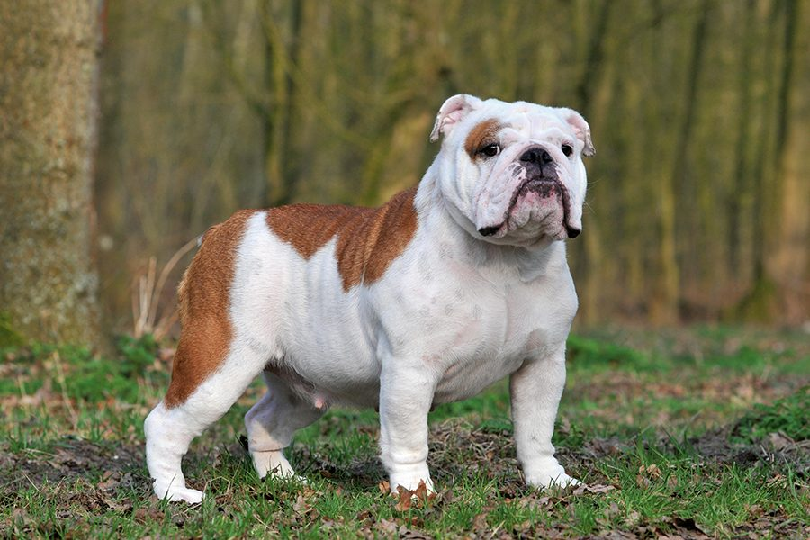

Bulldog
De Engelse buldog, meestal gewoon buldog (stierhond) genoemd, is een middelgroot hondenras. De Engelse buldog is een populaire zachtaardige gezinshond, goed met kinderen en geschikt voor gezinnen met een kleinere tuin of zelfs een appartement. Een dagelijkse wandeling kan hem smaken, maar is niet noodzakelijk. Erkende FCI fokkers die aandacht besteden aan het combineren van gezonde ouderdieren, verbeterden de laatste jaren intensief zijn algemene gezondheid waardoor eerdere ‘algemene’ moeilijkheden met ademhaling, huid en uithoudingsvermogen, staart en gewrichtsproblemen tot een absoluut minimum herleid werden. Helaas is de Engelse buldog dankzij zijn hoge populariteit vaak te vinden in petstores, dierenwinkels, broodfokkers. Zoals alle honden en dieren die gefokt worden met uitsluitend een financieel doel, is gezondheid vaak bijkomstig.
Geschiedenis
Dit hondenras is een nauwe bloedverwant van de oude vechthonden van het molossertype, dieren die hun naam ontlenen aan de landstreek Molossus in het Griekenland der klassieken. Er wordt voor het eerst naar dit ras verwezen in Engelse literatuur van rond 1500, gespeld als 'Bondogge' en 'Bolddogge'. De moderne Engelse spelling, 'Bulldog', duikt voor het eerst op in een brief uit 1631 of 1632, terwijl de eerste afbeelding van het ras uit 1740 dateert. Naar men beweert zou een zekere graaf Warren uit Stanford in 1231 gezien hebben hoe twee honden een paar vechtende stieren scheidden en hitsten. Aangezien zijn gevolg net als hij veel plezier had gehad in het schouwspel, organiseerde de graaf het van tijd tot tijd. Al spoedig groeide het in Engeland uit tot een waar volksvermaak. Men koos er zware honden met brede kaken voor uit, fokte deze systematisch verder en lette daarbij vooral op aangeboren scherpte.
s Op deze wijze ontstond een slag honden met massale schedel en brede muil, naar achteren gerichte hoektanden die als het ware geschapen waren om vast te houden wat ze eenmaal te pakken hadden, en met een "terugliggende" neus, die het dier in staat stelde adem te halen zonder de tegenstander los te laten. Korte, ver uit elkaar geplaatste voorpoten gaven hem een vaste stand. Toen in 1835 in Engeland het bullenbijten bij de wet verboden werd, was het ras reeds kant-en-klaar. Werkloos geworden zou het waarschijnlijk uitgestorven zijn, als een zekere Bill George het niet, dwars tegen de openbare mening in, was blijven fokken. Uit de beruchte knokker en moordenaar groeide thans een trouwe waker en begeleider, een beminnelijke huisgenoot, die om zijn goede eigenschappen uitgroeide tot nationaal symbool: John Bull was niet meer denkbaar zonder zijn buldog.
Kenmerken
De buldog heeft een erg gladde vacht, gerimpelde wangen, sterke voorpoten maar langere achterpoten. In tegenstelling tot de reputatie van de hond is een buldog een zeer gemoedelijk hondenras. De buldog is zeer vriendelijk tegen zowel mensen (inclusief kinderen) en andere hondenrassen. Buldoggen zijn echter wel koppig en beschermend.
De Engelse buldog weegt 22 tot 25 kilo. De vacht is kortharig en komt voor in beige, roodbruin, gestroomd (met of zonder zwart masker), wit (met veel donker pigment op snuit en ogen) en wit gevlekt.
Er bestaat ook een Olde English Bulldogge, soms Victorian Bulldog genoemd. Deze is iets grover gebouwd en heeft een staart van normale lengte. Hij staat gewoonlijk ook hoger op zijn poten.
Gezondheid
Buldoggen kunnen ademhalingsproblemen krijgen, aangezien hun terugliggende neus een goede luchtstroom bemoeilijkt. De Engelse buldog is snel kortademig en zeer gevoelig voor het brachycefaal obstructief syndroom, een aandoening die veel voorkomt bij honden met een kleine schedel en platte snuit, en leidt tot ernstige ademhalingsproblemen en een verminderd uithoudingsvermogen. Ook gewrichtsproblemen aan de heupen en knieën komen regelmatig voor. Daarnaast verlopen het paren en het werpen van pups nogal eens problematisch. Omdat veel Engelse buldoggen niet in staat zijn zich op een natuurlijke manier voort te planten heeft dit ras vaak te maken met kunstmatige inseminaties en keizersneden (dystocia). De Engelse Buldog heeft ook vaak oogaandoeningen, allergieën, eczeem en oorontstekingen.[1][2][3]
De Engelse buldog wordt qua dierenwelzijn bij hondenrassen in slechte zin regelmatig aangehaald vanwege deze problemen en een rasstandaard die hiermee blijft conflicteren.
bron: wikipedia.nl